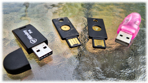
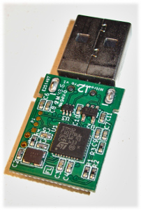
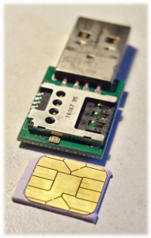
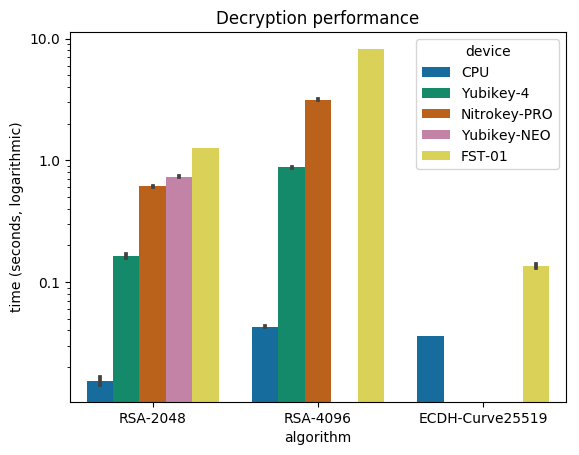

A comparison of cryptographic keycards
An earlier LWN article showed that private key storage is an important problem to solve in any cryptographic system and established keycards as a good way to store private key material offline. But which keycard should we use? This article examines the form factor, openness, and performance of four keycards to try to help readers choose the one that will fit their needs.
I have personally been using a YubiKey NEO, since a 2015 announcement on GitHub promoting two-factor authentication. I was also able to hook up my SSH authentication key into the YubiKey's 2048 bit RSA slot. It seemed natural to move the other subkeys onto the keycard, provided that performance was sufficient. The mail client that I use, (Notmuch), blocks when decrypting messages, which could be a serious problems on large email threads from encrypted mailing lists.
So I built a test harness and got access to some more keycards: I bought a FST-01 from its creator, Yutaka Niibe, at the last DebConf and Nitrokey donated a Nitrokey Pro. I also bought a YubiKey 4 when I got the NEO. There are of course other keycards out there, but those are the ones I could get my hands on. You'll notice none of those keycards have a physical keypad to enter passwords, so they are all vulnerable to keyloggers that could extract the key's PIN. Keep in mind, however, that even with the PIN, an attacker could only ask the keycard to decrypt or sign material but not extract the key that is protected by the card's firmware.
Form factor

The four keycards have similar form factors: they all connect to a standard USB port, although both YubiKey keycards have a capacitive button by which the user triggers two-factor authentication and the YubiKey 4 can also require a button press to confirm private key use. The YubiKeys feel sturdier than the other two. The NEO has withstood two years of punishment in my pockets along with the rest of my "real" keyring and there is only minimal wear on the keycard in the picture. It's also thinner so it fits well on the keyring.
The FST-01 stands out from the other two with its minimal design. Out of the box, the FST-01 comes without a case, so the circuitry is exposed. This is deliberate: one of its goals is to be as transparent as possible, both in terms of software and hardware design and you definitely get that feeling at the physical level. Unfortunately, that does mean it feels more brittle than other models: I wouldn't carry it in my pocket all the time, although there is a case that may protect the key a little better, but it does not provide an easy way to hook it into a keyring. In the group picture above, the FST-01 is the pink plastic thing, which is a rubbery casing I received along with the device when I got it.
Notice how the USB connectors of the YubiKeys differ from the other two: while the FST-01 and the Nitrokey have standard USB connectors, the YubiKey has only a "half-connector", which is what makes it thinner than the other two. The "Nano" form factor takes this even further and almost disappears in the USB port. Unfortunately, this arrangement means the YubiKey NEO often comes loose and falls out of the USB port, especially when connected to a laptop. On my workstation, however, it usually stays put even with my whole keyring hanging off of it. I suspect this adds more strain to the host's USB port but that's a tradeoff I've lived with without any noticeable wear so far. Finally, the NEO has this peculiar feature of supporting NFC for certain operations, as we previously covered, but I haven't used that feature yet.
The Nitrokey Pro looks like a normal USB key, in contrast with the other two devices. It does feel a little brittle when compared with the YubiKey, although only time will tell how much of a beating it can take. It has a small ring in the case so it is possible to carry it directly on your keyring, but I would be worried the cap would come off eventually. Nitrokey devices are also two times thicker than the Yubico models which makes them less convenient to carry around on keyrings.
Open and closed designs
The FST-01 is as open as hardware comes, down to the PCB design available as KiCad files in this Git repository. The software running on the card is the Gnuk firmware that implements the OpenPGP card protocol, but you can also get it with firmware implementing a true random number generator (TRNG) called NeuG (pronounced "noisy"); the device is programmable through a standard Serial Wire Debug (SWD) port. The Nitrokey Start model also runs the Gnuk firmware. However, the Nitrokey website announces only ECC and RSA 2048-bit support for the Start, while the FST-01 also supports RSA-4096. Nitrokey's founder Jan Suhr, in a private email, explained that this is because "Gnuk doesn't support RSA-3072 or larger at a reasonable speed". Its devices (the Pro, Start, and HSM models) use a similar chip to the FST-01: the STM32F103 microcontroller.

Nitrokey also publishes its hardware designs, on GitHub, which shows the Pro is basically a fork of the FST-01, according to the ChangeLog. I opened the case to confirm it was using the STM MCU, something I should warn you against; I broke one of the pins holding it together when opening it so now it's even more fragile. But at least, I was able to confirm it was built using the STM32F103TBU6 MCU, like the FST-01.

But this is where the comparison ends: on the back side, we find a SIM card reader that holds the OpenPGP card that, in turn, holds the private key material and does the cryptographic operations. So, in effect, the Nitrokey Pro is really a evolution of the original OpenPGP card readers. Nitrokey confirmed the OpenPGP card featured in the Pro is the same as the one shipped by the Free Software Foundation Europe (FSFE): the BasicCard built by ZeitControl. Those cards, however, are covered by NDAs and the firmware is only partially open source.
This makes the Nitrokey Pro less open than the FST-01, but that's an inevitable tradeoff when choosing a design based on the OpenPGP cards, which Suhr described to me as "pretty proprietary". There are other keycards out there, however, for example the SLJ52GDL150-150k smartcard suggested by Debian developer Yves-Alexis Perez, which he prefers as it is certified by French and German authorities. In that blog post, he also said he was experimenting with the GPL-licensed OpenPGP applet implemented by the French ANSSI.
But the YubiKey devices are even further away in the closed-design
direction. Both the hardware designs and firmware are proprietary. The
YubiKey NEO, for example, cannot be upgraded at all, even though it is
based on an open firmware. According to Yubico's FAQ,
this is due to "best
security practices": "There is a 'no upgrade' policy for our devices
since nothing,
including malware, can write to the firmware.
"
I find this decision questionable in a context where security updates are often more important than trying to design a bulletproof design, which may simply be impossible. And the YubiKey NEO did suffer from critical security issue that allowed attackers to bypass the PIN protection on the card, which raises the question of the actual protection of the private key material on those cards. According to Niibe, "some OpenPGP cards store the private key unencrypted. It is a common attitude for many smartcard implementations", which was confirmed by Suhr: "the private key is protected by hardware mechanisms which prevent its extraction and misuse". He is referring to the use of tamper resistance.
After that security issue, there was no other option for YubiKey NEO users than to get a new keycard (for free, thankfully) from Yubico, which also meant discarding the private key material on the key. For OpenPGP keys, this may mean having to bootstrap the web of trust from scratch if the keycard was responsible for the main certification key.
But at least the NEO is running free software based on
the OpenPGP card applet and the source is
still available on GitHub. The YubiKey 4, on the other hand, is
now closed
source, which was controversial when the new
model was announced last year. It led the main Linux Foundation system
administrator, Konstantin Ryabitsev, to withdraw his endorsement
of Yubico products. In response, Yubico argued that this approach
was essential to the security of its devices, which are now
based on "a secure chip, which has built-in countermeasures to mitigate
a long list of attacks
". In particular, it claims that:
While I understand those concerns, they eventually come down to the trust you have in an organization. Not only do we have to trust Yubico, but also hardware manufacturers and designs they have chosen. Every step in the hidden supply chain is then trusted to make correct technical decisions and not introduce any backdoors.
History, unfortunately, is not on Yubico's side: Snowden revealed the example of RSA security accepting what renowned cryptographer Bruce Schneier described as a "bribe" from the NSA to weaken its ECC implementation, by using the presumably backdoored Dual_EC_DRBG algorithm. What makes Yubico or its suppliers so different from RSA Security? Remember that RSA Security used to be an adamant opponent to the degradation of encryption standards, campaigning against the Clipper chip in the first crypto wars.
Even if we trust the Yubico supply chain, how can we trust a closed design using what basically amounts to security through obscurity? Publicly auditable designs are an important tradition in cryptography, and that principle shouldn't stop when software is frozen into silicon.
In fact, a critical vulnerability called ROCA disclosed recently affects closed "smartcards" like the YubiKey 4 and allows full private key recovery from the public key if the key was generated on a vulnerable keycard. When speaking with Ars Technica, the researchers outlined the importance of open designs and questioned the reliability of certification:This issue with open hardware designs seems to be recurring topic of conversation on the Gnuk mailing list. For example, there was a discussion in September 2017 regarding possible hardware vulnerabilities in the STM MCU that would allow extraction of encrypted key material from the key. Niibe referred to a talk presented at the WOOT 17 workshop, where Johannes Obermaier and Stefan Tatschner, from the Fraunhofer Institute, demonstrated attacks against the STMF0 family MCUs. It is still unclear if those attacks also apply to the older STMF1 design used in the FST-01, however. Furthermore, extracted private key material is still protected by user passphrase, but the Gnuk uses a weak key derivation function, so brute-forcing attacks may be possible. Fortunately, there is work in progress to make GnuPG hash the passphrase before sending it to the keycard, which should make such attacks harder if not completely pointless.
When asked about the Yubico claims in a private email, Niibe did recognize that "it is true that there are more weak points in general purpose implementations than special implementations". During the last DebConf in Montreal, Niibe explained:
If you don't trust me, you should not buy from me. Source code availability is only a single factor: someone can maliciously replace the firmware to enable advanced attacks.
Niibe recommends to "build the firmware yourself", also saying the design of the FST-01 uses normal hardware that "everyone can replicate". Those advantages are hard to deny for a cryptographic system: using more generic components makes it harder for hostile parties to mount targeted attacks.
A counter-argument here is that it can be difficult for a regular user to audit such designs, let alone physically build the device from scratch but, in a mailing list discussion, Debian developer Ian Jackson explained that:
You don't need to be able to validate it personally. The thing spooks most hate is discovery. Backdooring supposedly-free hardware is harder (more costly) because it comes with greater risk of discovery.
To put it concretely: if they backdoor all of them, someone (not necessarily you) might notice. (Backdooring only yours involves messing with the shipping arrangements and so on, and supposes that you specifically are of interest.)
Since that, as far as we know, the STM microcontrollers are not backdoored, I would tend to favor those devices instead of proprietary ones, as such a backdoor would be more easily detectable than in a closed design. Even though physical attacks may be possible against those microcontrollers, in the end, if an attacker has physical access to a keycard, I consider the key compromised, even if it has the best chip on the market. In our email exchange, Niibe argued that "when a token is lost, it is better to revoke keys, even if the token is considered secure enough". So like any other device, physical compromise of tokens may mean compromise of the key and should trigger key-revocation procedures.
Algorithms and performance
To establish reliable performance results, I wrote a benchmark program naively called crypto-bench that could produce comparable results between the different keys. The program takes each algorithm/keycard combination and runs 1000 decryptions of a 16-byte file (one AES-128 block) using GnuPG, after priming it to get the password cached. I assume the overhead of GnuPG calls to be negligible, as it should be the same across all tokens, so comparisons are possible. AES encryption is constant across all tests as it is always performed on the host and fast enough to be irrelevant in the tests.
I used the following:
- Intel(R) Core(TM) i3-6100U CPU @ 2.30GHz running Debian 9 ("stretch"/stable amd64), using GnuPG 2.1.18-6 (from the stable Debian package)
- Nitrokey Pro 0.8 (latest firmware)
- FST-01, running Gnuk version 1.2.5 (latest firmware)
- YubiKey NEO OpenPGP applet 1.0.10 (not upgradable)
- YubiKey 4 4.2.6 (not upgradable)
Algorithm Device Mean time (s) ECDH-Curve25519 CPU 0.036 FST-01 0.135 RSA-2048 CPU 0.016 YubiKey-4 0.162 Nitrokey-Pro 0.610 YubiKey-NEO 0.736 FST-01 1.265 RSA-4096 CPU 0.043 YubiKey-4 0.875 Nitrokey-Pro 3.150 FST-01 8.218 
There we see the performance of the four keycards I tested, compared
with the same operations done without a keycard: the "CPU"
device. That provides the baseline time of GnuPG decrypting the file. The first
obvious observation is that using a keycard is slower: in the best
scenario (FST-01 + ECC) we see a four-fold slowdown, but in the worst case
(also FST-01, but RSA-4096), we
see a catastrophic 200-fold slowdown. When
I
presented the
results on the Gnuk mailing list, GnuPG developer Werner Koch confirmed those
"numbers are as expected
":
With a crypto chip RSA is much faster. By design the Gnuk can't be as fast - it is just a simple MCU. However, using Curve25519 Gnuk is really fast.
And yes, the FST-01 is really fast at doing ECC, but it's also the only keycard that handles ECC in my tests; the Nitrokey Start and Nitrokey HSM should support it as well, but I haven't been able to test those devices. Also note that the YubiKey NEO doesn't support RSA-4096 at all, so we can only compare RSA-2048 across keycards. We should note, however, that ECC is slower than RSA on the CPU, which suggests the Gnuk ECC implementation used by the FST-01 is exceptionally fast.
In discussions about improving the performance of the FST-01,
Niibe estimated the user tolerance threshold to be "2 seconds
decryption time
". In a new design using the STM32L432
microcontroller, Aurelien Jarno was able to bring the numbers for RSA-2048 decryption from 1.27s down to 0.65s, and for RSA-4096, from 8.22s
down to 3.87s seconds. RSA-4096 is still beyond the two-second
threshold, but at least it brings the FST-01 close to the YubiKey NEO
and Nitrokey Pro performance levels.
We should also underline the superior performance of the YubiKey 4: whatever that thing is doing, it's doing it faster than anyone else. It does RSA-4096 faster than the FST-01 does RSA-2048, and almost as fast as the Nitrokey Pro does RSA-2048. We should also note that the Nitrokey Pro also fails to cross the two-second threshold for RSA-4096 decryption.
For me, the FST-01's stellar performance with ECC outshines the other devices. Maybe it says more about the efficiency of the algorithm than the FST-01 or Gnuk's design, but it's definitely an interesting avenue for people who want to deploy those modern algorithms. So, in terms of performance, it is clear that both the YubiKey 4 and the FST-01 take the prize in their own areas (RSA and ECC, respectively).
Conclusion
In the above presentation, I have evaluated four cryptographic keycards for use with various OpenPGP operations. What the results show is that the only efficient way of storing a 4096-bit encryption key on a keycard would be to use the YubiKey 4. Unfortunately, I do not feel we should put our trust in such closed designs so I would argue you should either stick with 2048-bit encryption subkeys or keep the keys on disk. Considering that losing such a key would be catastrophic, this might be a good approach anyway. You should also consider switching to ECC encryption: even though it may not be supported everywhere, GnuPG supports having multiple encryption subkeys on a keyring: if one algorithm is unsupported (e.g. GnuPG 1.4 doesn't support ECC), it will fall back to a supported algorithm (e.g. RSA). Do not forget your previously encrypted material doesn't magically re-encrypt itself using your new encryption subkey, however.
For authentication and signing keys, speed is not such an issue, so I would warmly recommend either the Nitrokey Pro or Start, or the FST-01, depending on whether you want to start experimenting with ECC algorithms. Availability also seems to be an issue for the FST-01. While you can generally get the device when you meet Niibe in person for a few bucks (I bought mine for around $30 Canadian), the Seeed online shop says the device is out of stock at the time of this writing, even though Jonathan McDowell said that may be inaccurate in a debian-project discussion. Nevertheless, this issue may make the Nitrokey devices more attractive. When deciding on using the Pro or Start, Suhr offered the following advice:
In practice smart card security has been proven to work well (at least if you use a decent smart card). Therefore the Nitrokey Pro should be used for high security cases. If you don't trust the smart card or if Nitrokey Start is just sufficient for you, you can choose that one. This is why we offer both models.
So far, I have created a signing subkey and moved that and my authentication key to the YubiKey NEO, because it's a device I physically trust to keep itself together in my pockets and I was already using it. It has served me well so far, especially with its extra features like U2F and HOTP support, which I use frequently. Those features are also available on the Nitrokey Pro, so that may be an alternative if I lose the YubiKey. I will probably move my main certification key to the FST-01 and a LUKS-encrypted USB disk, to keep that certification key offline but backed up on two different devices. As for the encryption key, I'll wait for keycard performance to improve, or simply switch my whole keyring to ECC and use the FST-01 or Nitrokey Start for that purpose.
[The author would like to thank Nitrokey for providing hardware for testing.]
| Index entries for this article | |
|---|---|
| Security | Authentication |
| Security | Cryptographic devices |
| GuestArticles | Beaupré, Antoine |
Posted Oct 17, 2017 15:42 UTC (Tue)
by jepler (subscriber, #105975)
[Link] (4 responses)
Posted Oct 17, 2017 15:56 UTC (Tue)
by istenrot (subscriber, #69564)
[Link]
Posted Oct 17, 2017 15:57 UTC (Tue)
by excors (subscriber, #95769)
[Link]
Posted Oct 17, 2017 16:53 UTC (Tue)
by anarcat (subscriber, #66354)
[Link] (1 responses)
The SLJ52GDL150-150k smartcard mentioned in the article is also confirmed as vulnerable.
A Nitrokey representative say that they do not use the Infineon chips, and so claim their devices are not vulnerable. I haven't verified this myself yet, but if you own a Nitrokey, you can test this by submitting the public part of a key generated on the Nitrokey on the test site or the offline ROCA test suite.
The FST-01 doesn't use a smartcard so it should not vulnerable.
Keep in mind that the vulnerability requires that the private key was generated on the keycard. If you generated it elsewhere, you are not vulnerable to ROCA.
The ROCA release came in while we were doing the final editing on this article, and we had no view in the embargo period, so apologies for the last minute updates...
Posted Oct 17, 2017 19:45 UTC (Tue)
by dd9jn (✭ supporter ✭, #4459)
[Link]
Posted Oct 17, 2017 18:14 UTC (Tue)
by sagi (subscriber, #64671)
[Link] (1 responses)
One angle I never see covered in smart card comparisons is susceptibility to emanation, ie. the quality of shielding (TEMPEST) against electromagnetic sidechannels.
Fox-IT has recently demonstrated the ability to sniff AES keys from an application processor with pretty cheap hardware. There is a lot of research by Daniel Genkin et. al., including against Curve25519. This makes me wonder about the risk trade-off for use on the go (e.g. laptop+smart card during travel, conferences). Could a smart card that protects key material against a compromised host leak that same key more easily by virtue of being less shielded and singularly purposed for secret computation? My own knowledge on this trade-off is very limited, perhaps someone else can enlighten me? Naturally these things depend on your threat model, but that does not stop my curiosity :-)
Posted Oct 18, 2017 10:57 UTC (Wed)
by hkario (subscriber, #94864)
[Link]
and while dedicated, top of the line, smart-cards are (claimed to be) more resistant to attacks and analysis like this, they are not invulnerable, and definitely are not perfect (they make be TEMPEST resistant but can create low entropy RSA keys...)
finally, if you are worried about such attacks, how do you plan to secure against rubber hose cryptanalysis?
Posted Oct 17, 2017 19:21 UTC (Tue)
by davidstrauss (subscriber, #85867)
[Link] (3 responses)
This feels like a cheap shot to me. Closed-source software does not inherently rely on security through obscurity (or anything that "basically amounts" to such). Yubico may simply have decided to go proprietary for commercial reasons. Is there any evidence the YubiKey 4 relies on obscurity for serving its function?
Closed-source designs are certainly harder to publicly audit, but that is not the same as relying on the obscurity for functional purposes. Even organizations using closed-source approaches have employees resign, employees get fired, or their code leak. Security through obscurity is just bad design, regardless of how intentionally public the code is.
Posted Oct 17, 2017 22:06 UTC (Tue)
by anarcat (subscriber, #66354)
[Link] (2 responses)
Posted Oct 17, 2017 23:44 UTC (Tue)
by davidstrauss (subscriber, #85867)
[Link] (1 responses)
While I don't think either of us would agree with their argument, saying that there is security value in keeping source closed is not the same as *relying* on the closed source as part of the security design. I'm not sure they believe their own argument, anyway; the statement seemed like a PR-friendly way to justify choosing a closed-source model when they were under heat for the switch.
Also, while I mostly use FOSS myself and believe in organizational transparency, I'm not about to publish the DNS names and IP addresses for my company's infrastructure. Yet, that is still different from relying on the secrecy of that information.
In my understanding, security through obscurity requires that a leak of the architecture or source code leads to trivial compromise.
> I was merely asking a question, which I could rephrase as: is there really inherent merit in closed designs themselves? It seems we are in agreement that the answer is "no".
It's a totally fair question, and I do think we agree. What concerned me is that it was asked in a loaded way, presuming that Yubico employs obscurity as part of their fundamental security design. Their closed design makes it hard to know, but, to me, it's the difference between (1) some wariness about choosing them versus (2) seeing their product as useless. Maybe the inability to audit means we should cautiously assume #2, but I would still not suggest their guilt on that alone.
By the way, I thought your article was great overall. I own pretty much every major crypto option supported by Linux and the major FOSS smart card systems (both PKCS#11 and GPG), and I agree that it's difficult to find good options.
Posted Oct 18, 2017 8:59 UTC (Wed)
by jani (subscriber, #74547)
[Link]
Disclaimer: I used to develop smart card operating systems for a living, but it's been a while.
Posted Oct 17, 2017 20:40 UTC (Tue)
by nix (subscriber, #2304)
[Link] (6 responses)
Has this been fixed now? (or are you just using a Mac? My understanding is that MacOS X's smartcard daemon doesn't have this problem.)
Posted Oct 17, 2017 21:50 UTC (Tue)
by anarcat (subscriber, #66354)
[Link] (5 responses)
Posted Oct 17, 2017 22:22 UTC (Tue)
by karkhaz (subscriber, #99844)
[Link] (3 responses)
A use case I'm interested in is leaving a NitroKey plugged into an internal USB port of my workstation permanently, holding GPG keys, and carrying a Yubikey on my person to authenticate via PAM. There are various other advantages here...for example, the OpenSSH daemon now supports requiring two forms of authentication (including two separate SSH keys), so having a "workstation smartcard" and "personal smartcard" means that having physical access to my workstation is not enough to SSH into my other machines, and neither is stealing my personal smartcard---you need both.
Has anybody tried something like this? Asking because I'm a student and can't justify buying several of these if it can't work. I'm also not sure exactly which software is responsible for this, i.e. whether it's scdaemon that needs to be able to talk to two cards, or gpg-agent that needs to know to try decrypting with each smartcard in sequence until one works, or what.
Posted Oct 17, 2017 22:34 UTC (Tue)
by anarcat (subscriber, #66354)
[Link] (1 responses)
Posted Oct 18, 2017 6:01 UTC (Wed)
by dd9jn (✭ supporter ✭, #4459)
[Link]
Posted Oct 18, 2017 3:02 UTC (Wed)
by chder (subscriber, #96621)
[Link]
Posted Oct 17, 2017 23:38 UTC (Tue)
by nix (subscriber, #2304)
[Link]
Really? I don't see this behavior here.
Indeed, removing disable-ccid now makes scdaemon work fine for me, even when generating OTPs and doing HMAC challenges at the same time. I can't use PIV keys because scdaemon is still an unspeakable pile that sprays incomprehensible error messages rather than working, but I frankly don't care much (and forgot all my PINs long ago, and lost the piece of paper I wrote them down on). At least I can use GPG smartcard keys now, which means I can migrate to SSH keys on my smartcard via gpg-agent, as long as I can convince it to work across multiple chains of sshes (a very frequent use case for me, but since the agent connection is part of SSH, not GnuPG, I already know that part works).
Posted Oct 17, 2017 22:06 UTC (Tue)
by tialaramex (subscriber, #21167)
[Link]
https://www.imperialviolet.org/2017/10/08/securitykeytest...
Posted Oct 18, 2017 13:38 UTC (Wed)
by madhatter (subscriber, #4665)
[Link] (3 responses)
For me, this is one of the most useful features of my Yubikey, because when used with my LineageOS 'phone running Yubico Authenticator, it can generate quite a lot of TOTP OATH codes. Since Google Authenticator has become fairly ubiquitous for website 2FA, this has allowed me to turn on 2FA on every account I have that allows it (I have six different OATH codes stored on the Neo right now, and more are likely to be added shortly).
I'd say at this point that I use my Neo about four times as often for TOTP OATH as I use it for keyboard-based OTP authentication. You might want to take a second look at the NFC support.
Posted Oct 19, 2017 16:58 UTC (Thu)
by anarcat (subscriber, #66354)
[Link] (2 responses)
Posted Oct 21, 2017 16:00 UTC (Sat)
by raven667 (subscriber, #5198)
[Link] (1 responses)
Posted Oct 22, 2017 4:04 UTC (Sun)
by nix (subscriber, #2304)
[Link]
Posted Oct 22, 2017 11:31 UTC (Sun)
by domenpk (guest, #12382)
[Link]
This would make stolen keycards useless.
Posted Apr 9, 2018 13:27 UTC (Mon)
by higuita (subscriber, #32245)
[Link] (2 responses)
They claim open source and support for most common usages
Posted Apr 9, 2018 20:52 UTC (Mon)
by nix (subscriber, #2304)
[Link] (1 responses)
I bought another YubiKey instead. I don't have time to reverse-engineer this nightmare and reimplement it as something sane.
Apparently it's going to have a security audit. I suspect any auditor will run away screaming or just say "rewrite this unmaintainable pile first".
Posted Apr 10, 2018 7:18 UTC (Tue)
by johill (subscriber, #25196)
[Link]
Posted Oct 7, 2020 18:51 UTC (Wed)
by soern (guest, #142412)
[Link] (1 responses)
Admittedly, in 2013, sidechannel and glitch attacks were still somewhat unknown. Now in 2020, the picture is quite different. There's openly available hardware designs, affordable hardware and software (e.g. chipwhisperer, chipshouter, ...). The widely used STM32 is very popular among vendors of such tokens, but also has been proven to be totally unsuitable [1] in case you want to protect yourself against anything that goes beyond logical attacks. I don't blame the vendor, in my view it's rather the designers that have chosen to use a standard product in a security application -- it's simply not fit for purpose.
I haven't found any other vendor that has claims for tamper or side-channel resistance and many do use a standard microcontroller - or at least that's true for the ones where someone has opened the plastic box ;-)
As long as there is no hardware security token available whose complete hardware and software are either publicly scrunitizable or independently reviewed or even (CC) certified, I don't see why I should put my money and credentials into such a device. In my opinion, vendors of security tokens shy away too much from disclosing what they actually protect against. Many make no claims at all, others just hide behind meaningless marketing terms like "smart card level security" and the like.
Refs:
Posted Oct 10, 2020 10:39 UTC (Sat)
by jem (subscriber, #24231)
[Link]
Security keys like the YubiKey have the advantage that they are made to do one task, and do it well. The task is to be able to operate on an RSA or ECDSA key without revealing the key to the outside. To implement this functionality, it provides a simple specialized communications protocol. Remember, these tokens are not general purpose computers; the command set is tailored for a very specific purpose. Compare this to a PC or a smart phone which both have *huge* attack surfaces.
Utilizing side channel attacks, for example with differential power analysis, in practice requires physical access to the security key and equipment capable of measuring small timing and current consumption differences. There is no way an attacker could turn the USB port into a DPA device; at least not without physical access to the hardware.
Side channel attacks should of course be taken seriously in scenarios where the holder of the token is not the owner of the secret keys it contains, and the holder has a strong enough incentive to steal the keys. For example, I would be worried if I were in charge of a DRM scheme involving smart cards. But why would you hack yourself?
A comparison of cryptographic keycards
A comparison of cryptographic keycards
Yubico says some features of YubiKey 4 / 4C / 4 nano, versions 4.2.6-4.3.4, are affected by that issue. (Specifically "Use of onboard RSA key generation with PIV smart card and OpenPGP card onboard RSA key generation.")
A comparison of cryptographic keycards
As hinted in the article and other comments here, the Yubikey 4 is vulnerable to ROCA, for certain versions. There is a replacement program, but basically, you should consider keys generated on a vulnerable Yubikey 4 to be compromised if it's RSA-1024 or RSA-2048. RSA-4096 is currently considered out of reach but this could change quickly. The Yubikey NEO is apparently not vulnerable.
Breaking news update: which cards are vulnerable to ROCA?
Breaking news update: which cards are vulnerable to ROCA?
A comparison of cryptographic keycards
A comparison of cryptographic keycards
A comparison of cryptographic keycards
A comparison of cryptographic keycards
This feels like a cheap shot to me. Closed-source software does not inherently rely on security through obscurity (or anything that "basically amounts" to such). Yubico may simply have decided to go proprietary for commercial reasons. Is there any evidence the YubiKey 4 relies on obscurity for serving its function?
It is true that a lot of Yubico's decision is based on commercial incentives: the providers they could find require NDAs and so on. My argument is that this very fact constitutes "obscurity" and is often presented by vendors (not necessarily Yubico) as a feature. But even Yubico actually makes the argument that there is security in closed source software:
In fact, the attacker’s job becomes much easier as the code to attack is fully known and the attacker owns the hardware freely. Without any built-in security countermeasures, the attacker can fully profile the behavior in a way that is impossible with a secure chip.
Compare this argument with the one presented by researchers quoted in the article... But your main point is that my metaphor is going too far, maybe:
Closed-source designs are certainly harder to publicly audit, but that is not the same as relying on the obscurity for functional purposes. Even organizations using closed-source approaches have employees resign, employees get fired, or their code leak. Security through obscurity is just bad design, regardless of how intentionally public the code is.
I concede that I may have pushed the metaphor a little far and went beyond the usual definition of "security through obscurity". But to my defense, I was merely asking a question, which I could rephrase as: is there really inherent merit in closed designs themselves? It seems we are in agreement that the answer is "no". As to how exactly those "secure chips" implement their "security" is really the question here, and since we can't tell, because it's a closed design, my conclusion is that we can't fundamentally trust those devices. And I think ROCA or RSA (the company) both give overwhelming evidence supporting my conclusion.
A comparison of cryptographic keycards
A comparison of cryptographic keycards
A comparison of cryptographic keycards
So far, I have created a signing subkey and moved that and my authentication key to the YubiKey NEO, because it's a device I physically trust to keep itself together in my pockets and I was already using it. It has served me well so far, especially with its extra features like U2F and HOTP support, which I use frequently.
For a long time, this was impossible: the Neo is really three keys in one, and disconnects and reconnects from the USB bus as appropriate, morphing from OTP to U2F to CCID on demand. libccid / pcsc-lite couldn't cope with this and failed after the first disconnection, so in effect the first time you did a U2F or OTP/HMAC-SHA1 authentication after something launched pcscd and did a CCID operation, pcscd would fail and you'd lose access to the CCID element
A comparison of cryptographic keycards
For a long time, this was impossible: the Neo is really three keys in one, and disconnects and reconnects from the USB bus as appropriate, morphing from OTP to U2F to CCID on demand.
Really? I don't see this behavior here.
libccid / pcsc-lite couldn't cope with this and failed after the first disconnection, so in effect the first time you did a U2F or OTP/HMAC-SHA1 authentication after something launched pcscd and did a CCID operation, pcscd would fail and you'd lose access to the CCID element
Has this been fixed now? (or are you just using a Mac? My understanding is that MacOS X's smartcard daemon doesn't have this problem.)
I do *not* use a mac, of course. :p
This is what I see when the NEO is connected:
oct 17 17:45:08 curie kernel: input: Yubico Yubikey NEO OTP+U2F+CCID as /devices/pci0000:00/0000:00:14.0/usb1/1-2/1-2:1.0/0003:1050:0116.0015/input/input24
oct 17 17:45:08 curie kernel: hid-generic 0003:1050:0116.0015: input,hidraw2: USB HID v1.10 Keyboard [Yubico Yubikey NEO OTP+U2F+CCID] on usb-0000:00:14.0-2/input0
oct 17 17:45:08 curie kernel: hid-generic 0003:1050:0116.0016: hiddev0,hidraw3: USB HID v1.10 Device [Yubico Yubikey NEO OTP+U2F+CCID] on usb-0000:00:14.0-2/input1
It accurately shows up as two devices: an input device (a fake keyboard) and a generic input device, which is presumably used by GPG. I *did* have trouble with pcsscd with the upgrade to Debian stretch, as I documented here. With GnuPG and scdaemon 2.1.18, things are very smooth, although I need the U2F Firefox plugin for that part to work.
A comparison of cryptographic keycards
A comparison of cryptographic keycards
A comparison of cryptographic keycards
A comparison of cryptographic keycards
A comparison of cryptographic keycards
> For a long time, this was impossible: the Neo is really three keys in one, and disconnects and reconnects from the USB bus as appropriate, morphing from OTP to U2F to CCID on demand.
Hmmm. I saw this in older kernels, but not any more. Since this is clearly kernel-specific, it can't be anything to do with the behaviour of the key: so I must be wrong.
I *did* have trouble with pcsscd with the upgrade to Debian stretch, as I documented here
Those bugs are bang in the time window when I tried this last (and gave up), so I guess the problem was indeed solved because you had more determination than me.
Other reviews
https://github.com/hillbrad/U2FReviews#u2freviews
> Finally, the NEO has this peculiar feature of supporting NFC for certain operations [...] but I haven't used that feature yet.
A comparison of cryptographic keycards
A comparison of cryptographic keycards
You might want to take a second look at the NFC support.
I didn't expand on this too much in the article because that wasn't the main point, but the reason why I don't use NFC is twofold.
A comparison of cryptographic keycards
A comparison of cryptographic keycards
Why not encrypt keys?
onlykey
I was very tempted. Then I looked at the code with the intention of adding HMAC-SHA1 support because I need it for disk encryption passphrase generation, and, well, it caused immediate projectile vomiting. This stuff needs a total rewrite by someone who knows what modularity, functional decomposition, and, frankly, indentation are. (It's probably buggy, too: as near as I can tell from the horrific code, its YubiKey emulation burns a session every time it generates an OTP, limiting it to generating 32767 OTPs max from a given RSA ID. Oops.)
onlykey
onlykey
A comparison of cryptographic keycards
Standard micros are simply unfit for that kind of application. They are designed for resistance against logical attacks, but obviously have no resistance against glitch attacks [2].
0 - https://www.seceng.ruhr-uni-bochum.de/media/crypto/veroef...
1 - https://eprint.iacr.org/2019/401.pdf
2 - https://www.cl.cam.ac.uk/~sps32/ECRYPT2011_1.pdf
A comparison of cryptographic keycards